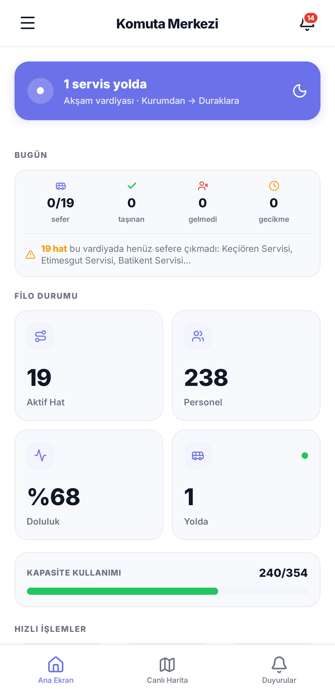
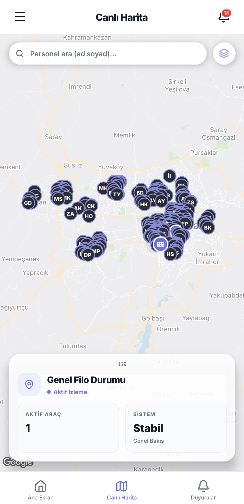
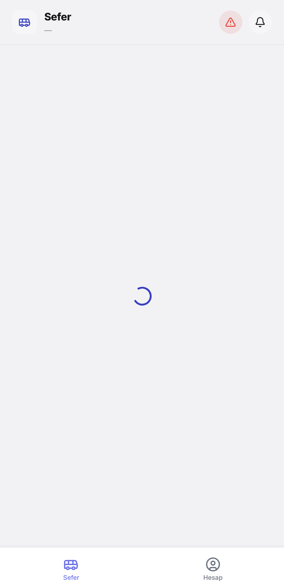
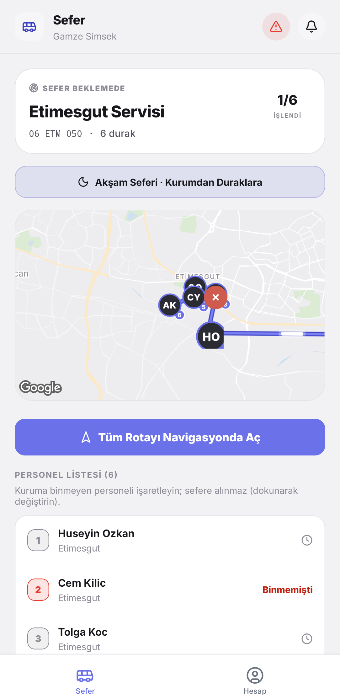
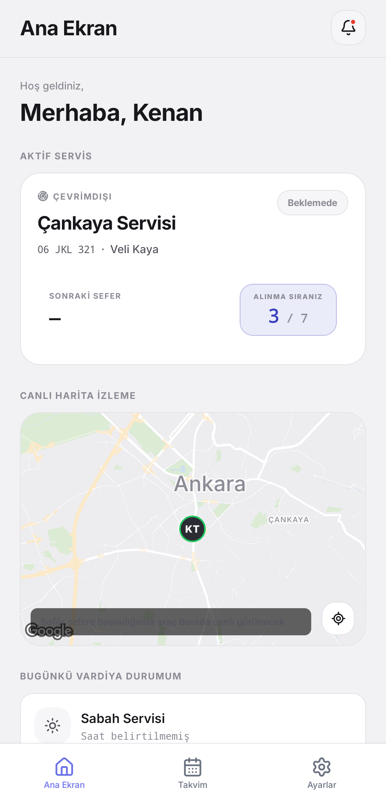
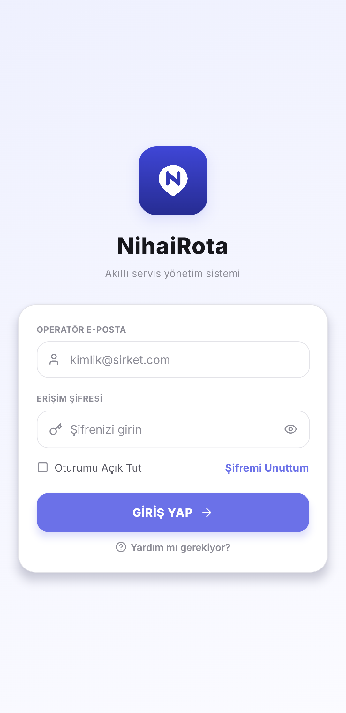

Kurumsal servisiniz, canlı ve tek merkezde.
NihaiRota; yönetici, şoför ve personel için ayrı ayrı tasarlanmış deneyimlerle personel servislerini uçtan uca yönetir. Canlı harita takibi, akıllı güzergâh ve anlık bildirim — hepsi tek uygulamada.





Yönetici · Komuta Merkezi
Roller
Üç rol, tek akış
Herkes yalnızca kendi işine odaklanır; veri arkada tek merkezde birleşir.
Yönetici
- Personel, şoför ve hat hesaplarını oluşturur ve yönetir
- Rotaları planlar, personeli hatlara atar
- Tüm servisleri canlı harita üzerinde anlık izler
- Yoklama, doluluk ve gecikme raporlarını görür
- Toplu duyuru gönderir
Şoför
- Atanan rotayı ve durak sırasını görür
- Navigasyon ile durağa yönlendirilir
- Her durakta personeli “bindi / gelmedi” işaretler
- Gecikme ve acil durum bildirir
- Sefer boyunca konum otomatik paylaşılır
Personel
- Servisin canlı konumunu ve tahmini varışı görür
- “Servisiniz yaklaştı” bildirimi alır
- Gelmeyeceği günleri önceden bildirir
- Adres değişikliği talebi oluşturur
Öne Çıkanlar
Operasyonu canlı tutan çekirdek
Servis operasyonunu kâğıt ve telefon trafiğinden kurtarıp tek, güvenli ve canlı bir sisteme taşır.
Gerçek zamanlı canlı takip
Servis araçları ve personel harita üzerinde saniyeler içinde güncellenir.
Akıllı güzergâh motoru
Durak sıralaması otomatik hesaplanır; şoför en verimli rotaya yönlendirilir.
Yoklama: bindi / gelmedi
Her durakta personel tek dokunuşla işaretlenir; doluluk anında güncellenir.
Anlık bildirimler
“Servisiniz yaklaştı”, gecikme ve duyurular saniyesinde ulaşır.
Çevrimdışı dayanıklılık
Bağlantı kesilse de işaretler saklanır, ağ gelince otomatik senkronlanır.
Kurumlar arası veri yalıtımı
Her kurumun verisi veritabanı seviyesinde ayrı ve güvenli tutulur.
Ekranlar
Uygulamadan kareler
Yönetici, şoför ve personel — üç rolün uygulamadaki gerçek ekranları.

Kayıttan
Yoklama, canlı
Şoför durakta personeli işaretliyor — sayaç ve haritadaki durak anında güncelleniyor. Uygulamadan doğrudan ekran kaydı.
NihaiRota'yı hemen indirin
Android APK şimdi hazır. Google Play ve App Store yayınları hazırlanıyor — çıktığında bağlantılar buraya eklenecek.
APK'yı kurmak için, telefonunuzda indirdikten sonra dosyayı açın ve istendiğinde “bilinmeyen kaynaklardan kuruluma” izin verin (Ayarlar → Uygulamalar → Bilinmeyen uygulamaları yükle). Kurulum sonrası bu izni kapatabilirsiniz. APK, Vectonis tarafından imzalanmıştır.